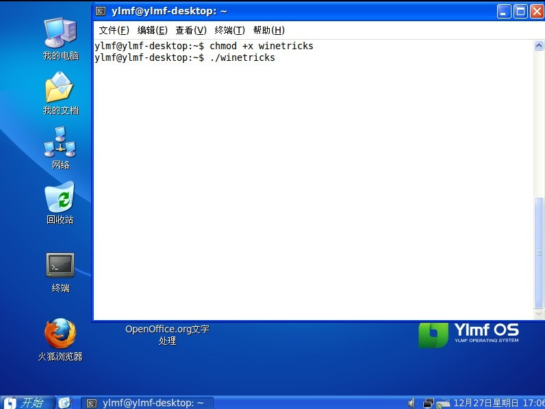
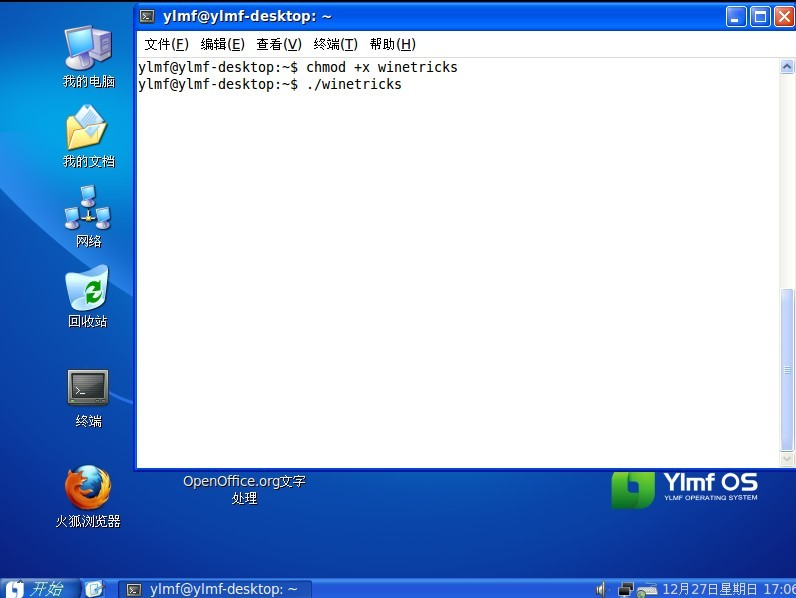

安装&帮助首页 » 如何安装Windows有关库和软件
Wine的其中一个开发者DanKegel写的一个安装Windows有关库和软件的小程序，非常有用！
操作步骤：
1. 双击桌面终端，然后输入
=680) window.open(this.src);" onload="if(this.width>'700')this.width='680';" />
2. 安装cab解压工具，终端里面输入
=680) window.open(this.src);" onload="if(this.width>'700')this.width='680';" />
3. 增加winetricks执行权限,然后运行winetricks，在终端输入
=680) window.open(this.src);" onload="if(this.width>'700')this.width='680';" />
=680) window.open(this.src);" onload="if(this.width>'700')this.width='680';" />
操作步骤：
1. 双击桌面终端，然后输入
- wget http://www.kegel.com/wine/winetricks
=680) window.open(this.src);" onload="if(this.width>'700')this.width='680';" />
2. 安装cab解压工具，终端里面输入
- sudo apt-get install cabextract
=680) window.open(this.src);" onload="if(this.width>'700')this.width='680';" />
3. 增加winetricks执行权限,然后运行winetricks，在终端输入
- chmod +x winetricks
- ./winetricks
=680) window.open(this.src);" onload="if(this.width>'700')this.width='680';" />
=680) window.open(this.src);" onload="if(this.width>'700')this.width='680';" />
-
库和软件说明:
art2kmin 微软 Access 2000 运行时. colorprofile 标准 RGB 颜色配置文件 comctl32 微软 common controls 5.80 comctl32.ocx 微软的comctl32.ocx 和comctl.ocx,VB6的comctl32外壳 corefonts 微软 Arial, Courier, Times 字体 dcom98 微软 DCOM, 替换Wine所自带的 dirac0.8 the obsolete Dirac 0.8 directshow filter directx9 微软 DirectX 9 divx divx 视频编码 dotnet11 微软 .NET 1.1 dotnet20 微软 .NET 2.0 ffdshow ffdshow 视频编码 flash Adobe Flash Player ActiveX 与 firefox 插件 fontfix Fix bad fonts which cause crash in some apps (e.g. .net). gdiplus 微软 gdiplus.dll (须安装powerpoint) gecko HTML 渲染引擎(Mozilla) icodecs Intel 媒体编码 (Indeo) jet40 微软 Jet 4.0 Service Pack 8 liberation Red Hat Liberation 字体 (Sans, Serif, Mono) mdac25 微软 MDAC 2.5: 微软 ODBC 驱动, etc. mdac27 微软 MDAC 2.7 mdac28 微软 MDAC 2.8 mfc40 微软 mfc40 (Microsoft Foundation Classes from Visual C++ 4) mfc42 微软 mfc42 (包含于下面的vcrun6) mono19 mono-1.9.1-gtksharp-2.10.4-win32-2 msi2 微软 Installer 2.0 msls31 微软 Line Services 3.1 (needed by native riched?) msxml3 微软 XML version 3 msxml4 微软 XML version 4 msxml6 微软 XML version 6 ogg ogg 过滤器和编码器: flac, theora, speex, vorbis, pdh 微软 pdh.dll (Performance Data Helper) quicktime72 苹果 Quicktime 7.2 riched20 微软 riched20 and riched32 riched30 微软 riched30 tahoma 微软 Tahoma 字体 (not part of corefonts) vb3run 微软 Visual Basic 3 运行时 vb4run 微软 Visual Basic 4 运行时 vb5run 微软 Visual Basic 5 运行时 vb6run 微软 Visual Basic 6 运行时 vcrun6 微软 Visual C++ 6 sp4 运行库 (包括mfc42.dll, msvcp60.dll, msvcrt.dll) vcrun2003 微软 Visual C++ 2003 运行库 (包括mfc71.dll,msvcp71.dll,msvcr71.dll) vcrun2005 微软 Visual C++ 2005 运行库 (包括mfc80.dll,msvcp80.dll,msvcr80.dll) vcrun2005sp1 微软 Visual C++ 2005 sp1 运行库 vcrun2008 微软 Visual C++ 2008 运行库 (包括mfc90.dll,msvcp90.dll,msvcr90.dll) vjrun20 微软 Visual J# 2.0 运行库 (需要安装 dotnet20) wmp9 微软 Windows Media Player 9 wmp10 微软 Windows Media Player 10 wsh51 微软 Windows Scripting Host 5.1 wsh56 微软 Windows Scripting Host 5.6 wsh56js 微软 Windows scripting 5.6, 只有jscript,没有cscript wsh56vb 微软 Windows scripting 5.6, 只有vbscript,没有cscript xvid xvid 视频编码 autohotkey Autohotkey (open source gui scripting language) firefox3 Firefox 3 kde KDE for Windows installer mpc Media Player Classic vlc VLC media player allfonts 以上所有字体 (corefonts, tahoma, liberation) allcodecs 以上所有媒体编码 (xvid, ffdshow, icodecs) fakeie6 在注册表中写入IE6已安装信息 native_mdac Override odbc32 and odbccp32 nt40 Set windows version to nt40 win98 Set windows version to Windows 98 win2k Set windows version to Windows 2000 winxp Set windows version to Windows XP vista Set windows version to Windows Vista winver= Set windows version to default (winxp) volnum Rename drive_c to harddiskvolume0 (needed by some installers)